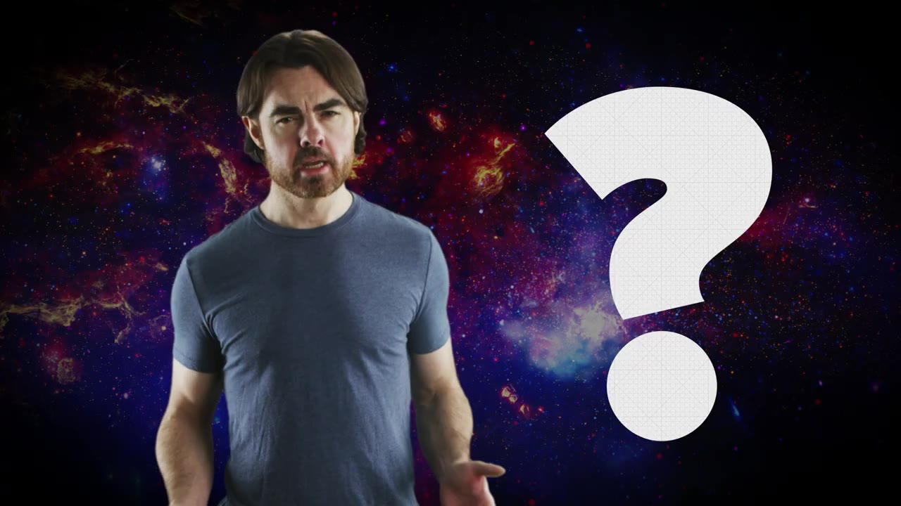
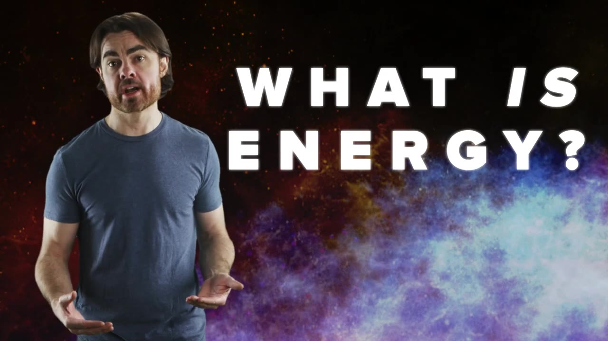
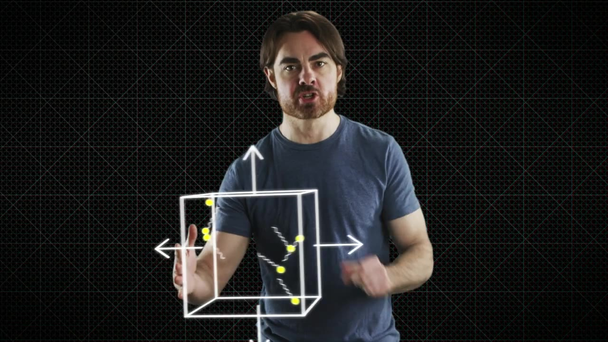
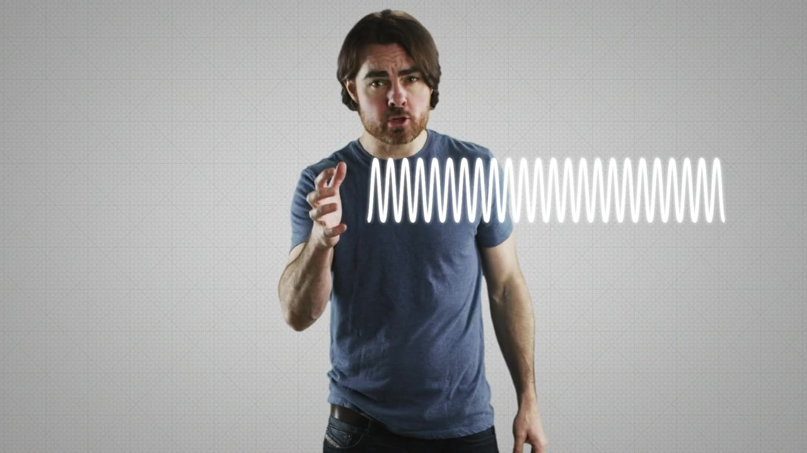
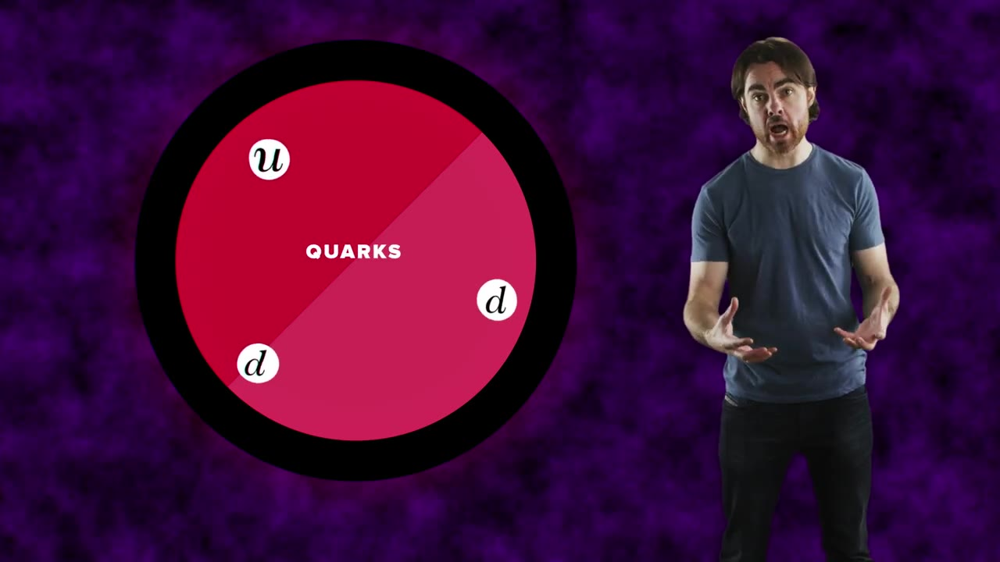
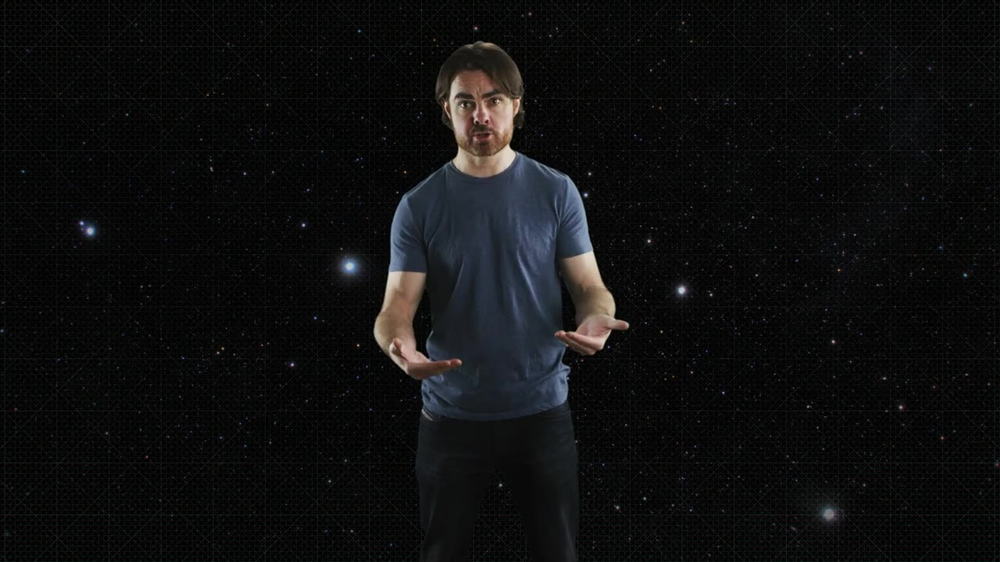

Mass isn't a fundamental property of matter — it emerges from massless particles bouncing around at the speed of light. Trapped energy is mass. Time is a property of the ensemble, not the parts.
Watch on YouTubeEinstein showed that matter, mass, and the flow of time are intrinsically connected — but are these concepts real, or emergent? Mass itself may be an illusion of confinement.

Rather than defining energy abstractly, let's look at what mass does: it resists acceleration. This is inertial mass — the degree to which an object pushes back when you try to change its speed. The deeper question is what physical mechanism creates this resistance.

Imagine a massive box with mirrored walls, filled with massless photons bouncing in all directions. When you push the box, photons hitting the back wall feel more pressure than those at the front — a pressure gradient that looks exactly like inertia. The photons transfer momentum to the box as it accelerates, and the box resists. The box has mass even though its components don't.

The photon box has mass, even though its components — neither the photons nor the walls — have mass.— Narrator
A compressed spring contains more energy than a relaxed one — and therefore has more mass. Pushing it requires a greater initial impulse because the spring resists being compressed further. The density wave travels through the spring at the speed of light (electromagnetic interactions between atoms), and that speed-of-light constraint is the same underlying cause as the photon box.

99% of a proton's mass is quark oscillation energy plus the binding energy of the gluon field — not the intrinsic mass of the quarks themselves. The proton is essentially a combination of the photon box (quarks bouncing) and the compressed spring (the gluon field as confinement). Even the tiny intrinsic masses of quarks and electrons come from confinement via the Higgs field.

Anything with mass is composed of a combination of intrinsically massless, photonic particles that flow freely through the universe.— Narrator
The equivalence principle tells us that inertial mass and gravitational mass are one and the same. The photon box feels gravity not because its photons have mass, but because trapped energy — including momentum and pressure — curves spacetime. Individual photons affect spacetime, and trapping them in a box produces a real gravitational field.

An individual photon experiences no passage of time — its clock is frozen. But the photon box has mass, so it must feel time. When and where does time emerge? The individual particles don't have it during transit, and the walls don't add it on bounce. Time seems to be a property of the ensemble, not the parts.
The Higgs field doesn't slow particles down like molasses — it gives them inertia, a resistance to acceleration. Without the Higgs field, elementary particles would be massless and travel at the speed of light. The field acquired its non-zero value through spontaneous symmetry breaking a fraction of a second after the Big Bang, which separated the weak nuclear force from electromagnetism.